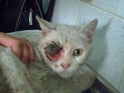
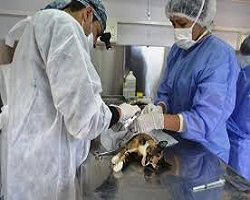
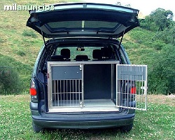

Nuestra fundacion ofrece los servicios Hospitalarios, en los casos que hay sido requerido quirúrgicamente y requiera de un cuidado especial.
Para tal actividad nuestra funfación cuenta con camillas especiales y todo el equipo necesario para la recurepación de nuestros animalitos.
Contamos con un selecto grupo de profesionales en el área de la veteriraria, que aportan sus excelente sernvicios, desinteresadamente a nuestra fundación.
Este equipo conformado por profesionales, enfermeros y auxiliares, han realizado un sinnúmero de cirugía, las cuales han sido exitosas, en todo el sentdo de la palabra.
Contamos con varios vehículos tipo ambulancia, en buen estado y acondicionados para trasladar desde cualquier parte de la ciudad hasta nuestra sede.
En los casos que los animalitos, presenten sintomas de agresividad, mantengase aislado y en especial a los niños que nuestro equipo, se encuentra capacitado para trasladarlos a nuestra sede.
